Smart Cleaning Solutions
Reduced water and chemical consumption results in 75% reduction in chemical waste.

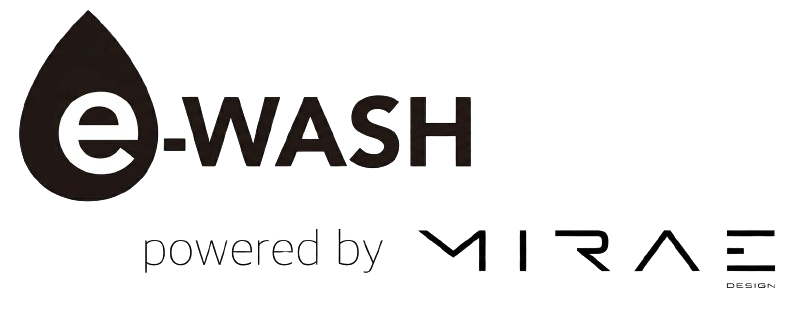

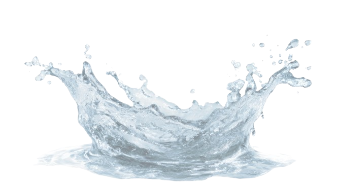
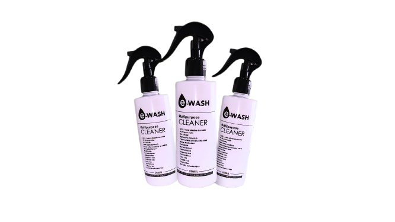
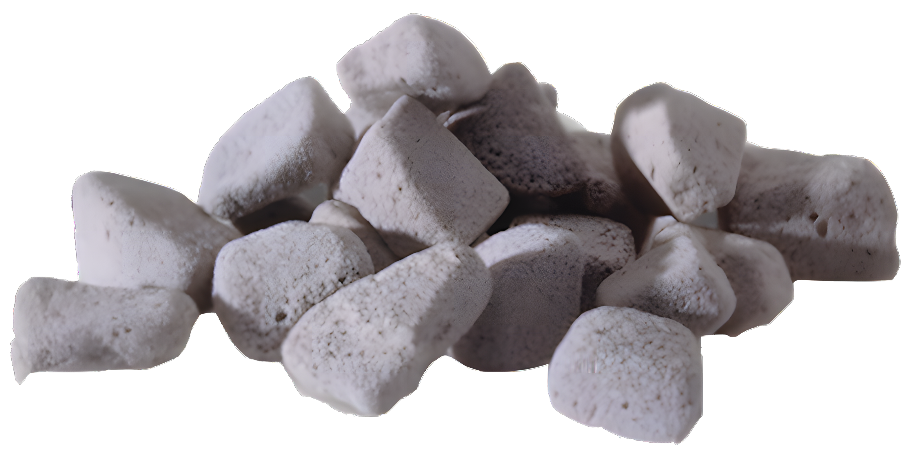
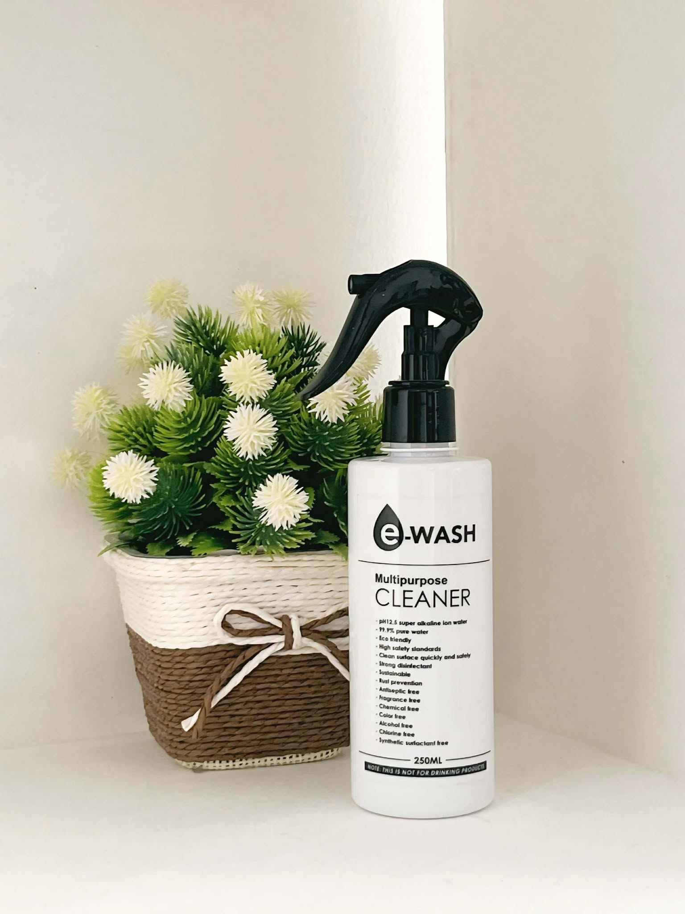
e-WASH Multipurpose Cleaner, this product is made using a unique electrolysis method to create Super Alkaline Ionized Water (SAIW). It is a safe and eco-friendly cleaner that is kind to both people and the environment. With a high pH of 12.5, it provides powerful cleaning, effectively removing stains, disinfecting, and deodorizing. It can be used safely on surfaces like refrigerators, kitchens, and everyday household items, as well as for removing harmful substances like chemicals.
Reduced water and chemical consumption results in 75% reduction in chemical waste.
Advanced sanitizing technologies effective against common pathogens, bacteria, and E. coli.
Biodegradable and non-toxic cleaning agents for various applications.
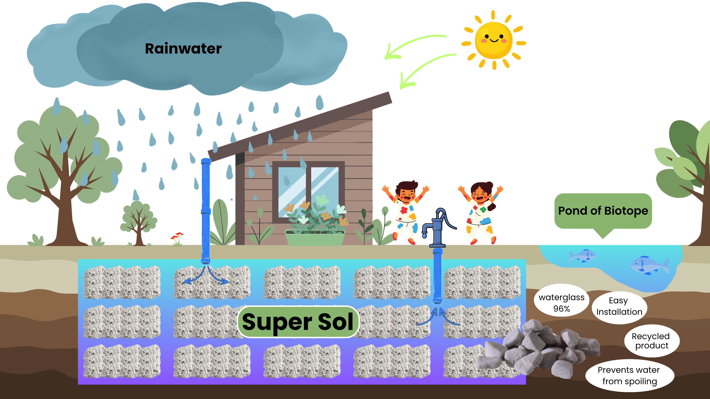
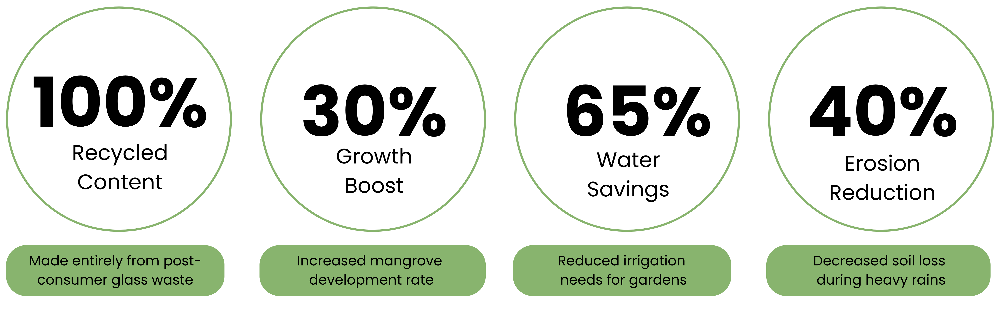
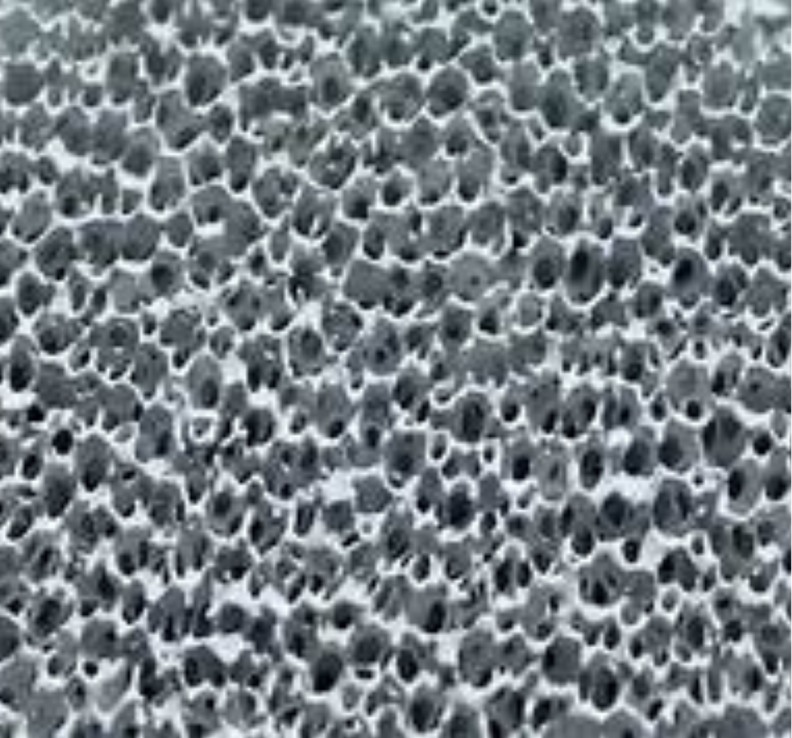
The feature is that there are countless large and small holes.
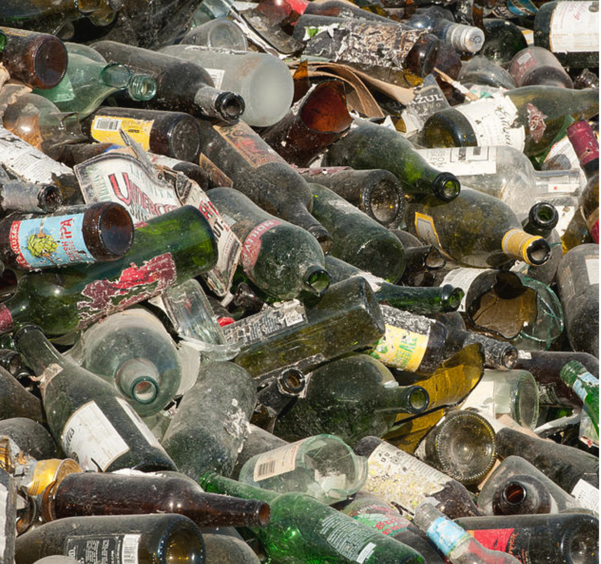
Resistant to heat and chemicals.
The porosity of Super Sol prepares the soil environment.
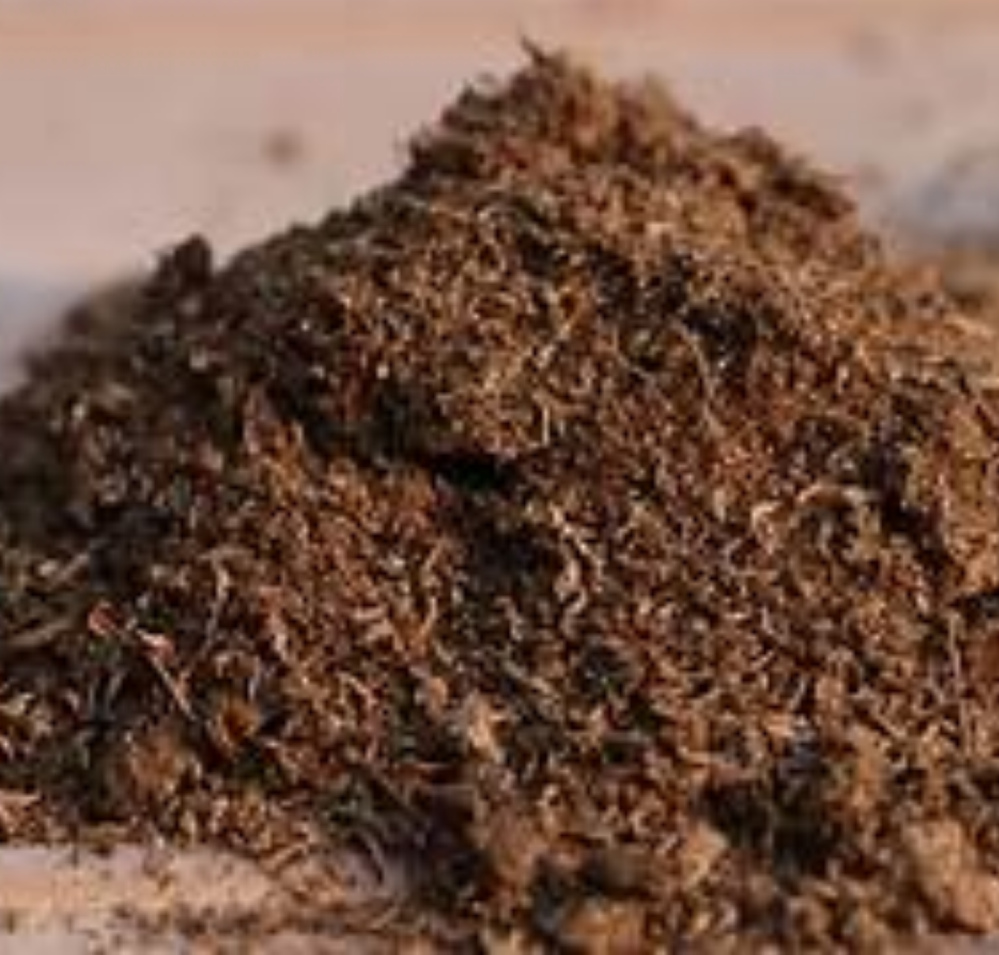
Super Sol is a recycling product from soil to soil.
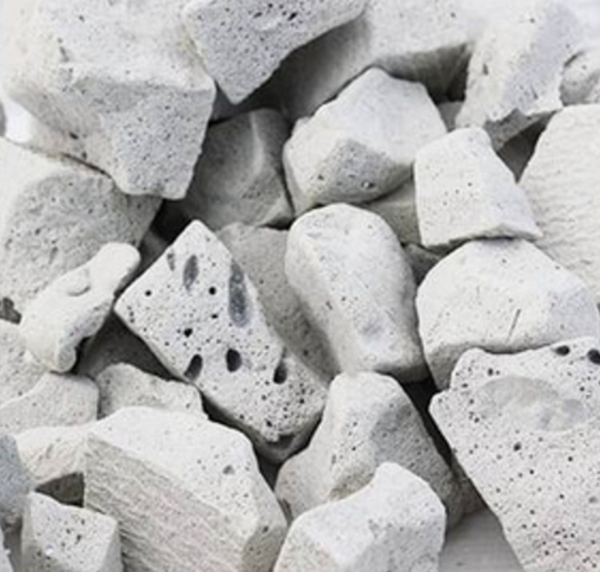
The specific gravity of the Super Sol is 0.25–1.6. It is possible to control the specific gravity from light enough to float on water to sinking in water.
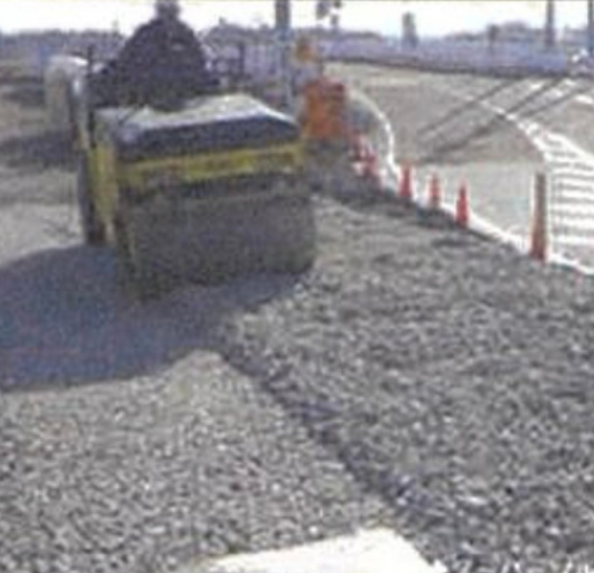
There is no need for Super Sol curing, and it can be used with simple construction such as leveling and rolling.

Integrated Japanese technologies for a replicable decentralized environmental and sanitation model in Southeast Asian island communities.
We hope our project can contribute to the magnificent El Nido region, one of the Philippines' leading tourist destinations and often referred to as "the last remaining unspoiled nature."
Created on April 26, 2026
DESEI integrates decentralized rainwater capture, manual access, localized transport, and centralized UF60 treatment into a repeatable operating model.
DESEI is not a single-product export; it is an operationally reproducible deployment model.
A model that integrates Japanese technologies to form decentralized environmental and sanitation infrastructure in Southeast Asian island communities.
It is not stand-alone product export, but a replicable deployment model built on clearly defined operating conditions.
Core workflow for the pilot site and City Hall treatment operation
Rainwater Storage
Hand Pump
Transport (100m)
Auxiliary water tank water pressure
UF60 Treatment
Alkaline Ionized Water e-WASH Output pH12.5
Recommended minimum team structure for daily field operation.
| Role | No. | Time | Main Task |
|---|---|---|---|
| Pump Operator | 1 | AM | Hand-pump withdrawal |
| Transport crew | 2 | AM | Carry water 100m |
| UF60 operator | 1 | Noon | Rooftop tank + UF60 |
| Distribution lead | 2 | PM | Delivery to users |
Why rooftop storage is required: stable head pressure for multi-stage treatment.
Annual rainfall and number of travelers
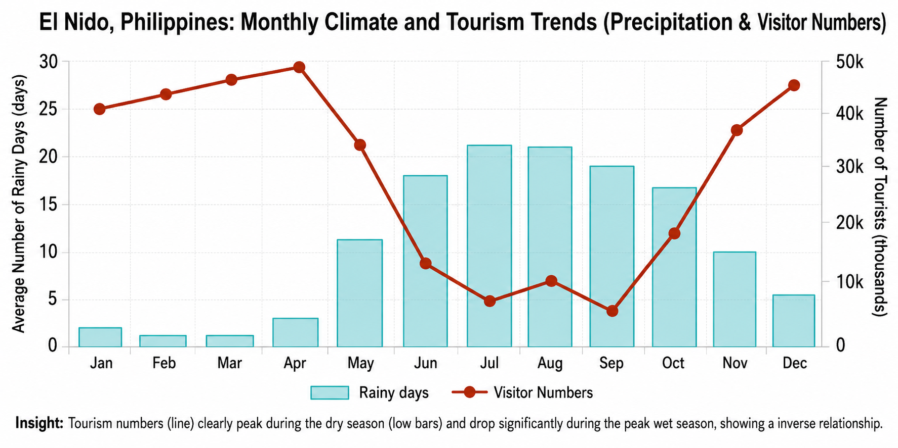
Insight: Tourism numbers (line) clearly peak during the dry season (low bars) and drop significantly during the peak wet season, showing a inverse relationship.
References : https://weather-and-climate.com/average-monthly-precipitation-Rainfall,el-nido-ph,Philippines
Maintaining water quality for a long time by inhibiting seepage due to the alkaline properties of Super Soil material.
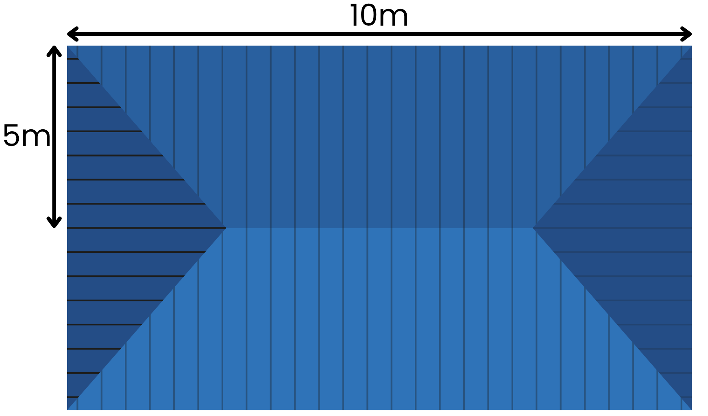
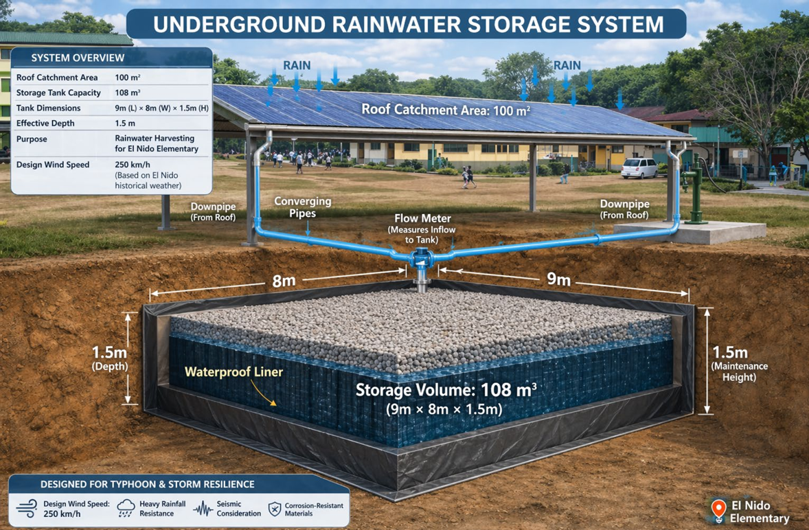
| Category | Item | After 3 Days | After 1 Month | After 2 Months |
|---|---|---|---|---|
| Super Sol | Appearance | Colorless & Transparent | Colorless & Transparent | Colorless & Transparent |
| E. coli (CFU/mL) | 0 | 1 | 2 | |
| Rainwater Only | Appearance | Colorless & Transparent | Colorless & Transparent | Colorless & Transparent |
| E. coli (CFU/mL) | 0 | 55 | 78 |
Rainwater was added to a container with Super Sol and
buried underground.
For comparison, a control
sample containing only rainwater (without Super Sol)
was also buried underground.
Water quality was periodically analyzed over time.
Location of rainwater underground storage system, location of UF60 and transport route.
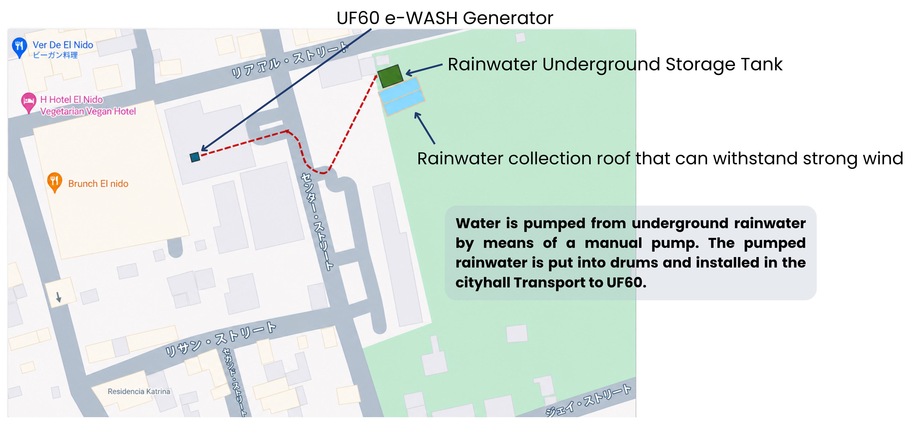
How to use photocatalytic Super Sol and sewage filter design in Super Sol estero
In order to improve the current situation of Estero, as an effective measure, we would like to propose to improve sewage by using an artificial porous lightweight foam material (Super Sol) made from crushed, calcined, and foamed waste glass, which has been proven in Japan, as a filter. In addition, last year, a new Super Sol with a titanium dioxide photocatalyst was developed.
Summary of Test Results
| NO | Sample Name | Differentiate | BOD (mg/L) | Rating |
|---|---|---|---|---|
| 1 | Open Canal | Same-day inspection | 711 | Sewage Level (extreme pollution) |
| 2 | Estero-A Using Photocatalyst Super Sol |
Photocatalyst Super Sol is used | 12 | Good |
| 3 | Estero-A' No Photocatalyst Super Sol |
3 weeks in an experimental environment | 33 | Significant Improvement |
| 4 |
MLA Water-B Using Photocatalyst Super Sol |
After treatment (Water System B) |
12 | Good |
| 5 |
MLA Water-B' No Photocatalyst Super Sol |
3 weeks in an experimental environment | 12 | Stable |
The test began with a sample collection on Friday, March 20th.Intertek took the test water back on March 30th.On April 6th, they took Sample A back along with the Estero wastewater sample for BOD testing.
By using e-WASH, you can expect to reduce the use of synthetic detergents by two-thirds and further inhibit the growth of organic matter.

We will create a mechanism for the reservoir to maximize contact between the photocatalyst Super Sol and the water surface.
Specifically,
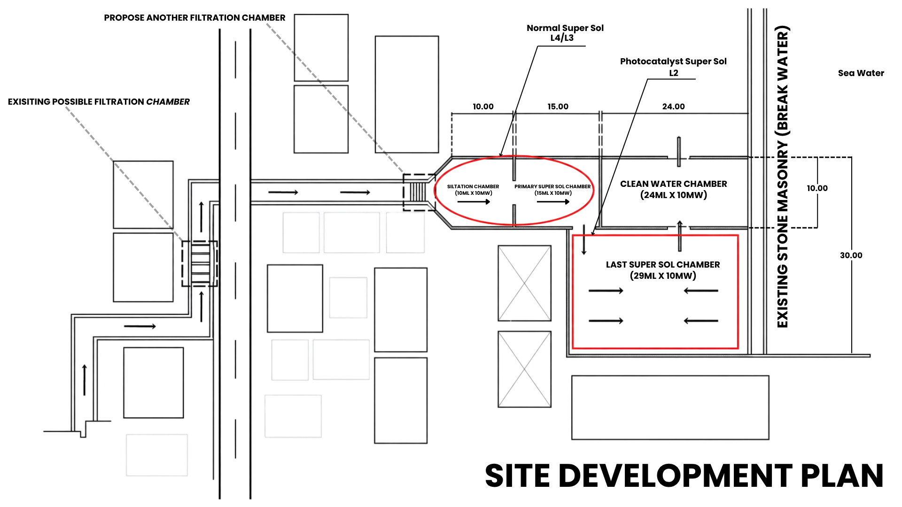
"Pre-treatment + organic matter
load reduction
zone"
"Pre-treatment + organic matter
load reduction
zone"